La confección del prototipo se dividirá en varias partes:
Confección de la válvula de escape
Preámbulo
Una válvula de escape permite la salida desde, pero no la entrada de aire hacia el respirador, y es necesaria para evitar el calentamiento y la acumilacion de humedad dentro de este, en particular para respiradores a ser utilizados por periodos largos de tiempo. Típicamente, la válvula de un respirador comercial consiste en un orificio en el equipo cubierto por una membrana flexible, adherida por fuera al respirador por solamente un extremo. Al espirar, la presión positiva desplaza a la membrana hacia afuera, permitiendo la salida del aire. Al inspirar, la presión negativa hace que la membrana cubra el orificio, impidiendo la entrada de aire. La membrana suele estar rodeada por un “tope”, que impide que se aleje demasiado del orificio durante la espiración, reduciendo el tiempo que tarda en volver a cubrirlo durante la inspiración siguiente.
Procedimiento
Inspirada en diseños anteriores la válvula aquí propuesta se compone de dos tapas “rosca” de botella, Un poco de cinta “doble faz”, cinta aisladora, cinta de teflón y lija.
Realizar varias perforaciones en ambas tapas. Lijar la cara externa de las tapas para evitar asperezas causadas por las perforaciones
Cortar un trocito de cinta de teflón, justo la suficiente para cubrir las perforaciones en una de las tapas, y pegarlo sobre la cara externa la tapa en cuestión, por uno de los extremos, utilizando cinta aisladora. La cinta de teflón será la membrana de la válvula.
Sobre la cinta aisladora, pegar un cuadrado de cinta de doble faz, que sea levemente más pequeño que la cinta misma (para evitar que el teflón se le adhiera).
sobre el cuadrado de cinta de doble faz, pegar la otra tapa, también por su cara externa (las caras externas de ambas tapas de botella deben quedar enfrentadas). Esta segunda tapa es el “tope” de la membrana.
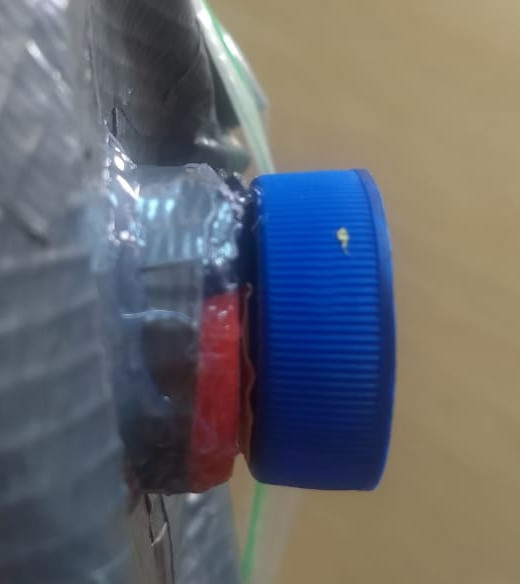
Confección del respirador
La base del respirador es una bolsa resellable tamaño mediano (aunque el tamaño podría variar según el tamaño de la cara del usuario). En el prototipo RA-03 se ha utilizado una bolsa marca Ilko.
Marcar en la bolsa círculos del tamaño de una tapa rosca de botella en los lugares en los que se insertaran la válvula y el conector para el filtro, respectivamente.
En RA-03, las marcas van a la misma altura del logo de “Ilko” en la bolsa, cerca de la “o”, y, por la otra cara externa de la bolsa, a la misma altura, pero en el lado opuesto (ver figura).
Perforar la tercera tapa de botella, tantas veces como sea posible y lijar el borde externo. Se puede utilizar un alicate para retirar pedazos de plástico sobresalientes por el lado interno. Es importante que las perforaciones no dañen el borde de la goma que las tapas llevan por dentro, o la hermeticidad de la conexión podria verse comprometida.
Cortar unos 5-10 cm de cinta americana y pegar este trozo sobre la tercera tapa formando un cilindro de cinta alrededor de esta
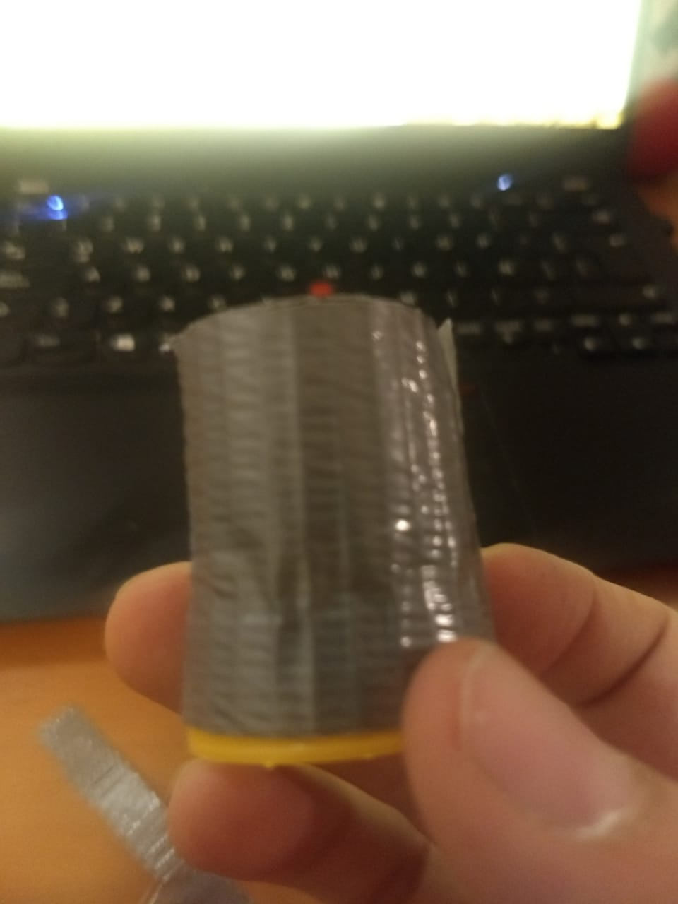
El cilindro debe cubrir toda la circunferencia de la tapa
El cilindro no debe sobresalir por el borde externo de la tapa.
El cilindro deberá sobresalir unos 3 cm o más desde el borde interno de la tapa (es decir, el borde que normalmente va hacia la botella).
Realizar una serie de cortes en la parte del cilindro de cinta de ductos que sobresalen de la cara interna de tapa de la tapa.
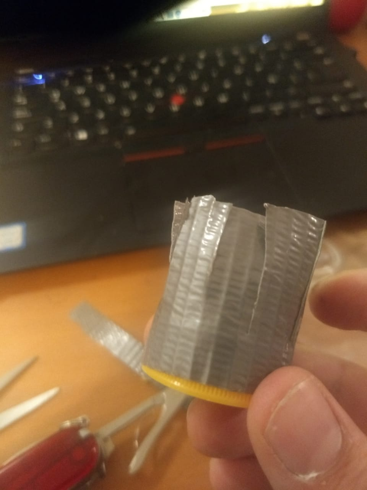
Entre cada corte debiera haber unos 0.7 cm de cinta.
Abrir los cortes de cinta hacia afuera, de modo tal que queden dispuestos como los pétalos de un girasol, siendo la tapa misma el centro de la flor
Adherir la tapa a la bolsa resellable en uno de los lugares previamente marcados para esto, utilizando la parte pegajosa de los “pétalos” de cinta americana, extendidos sobre la bolsa
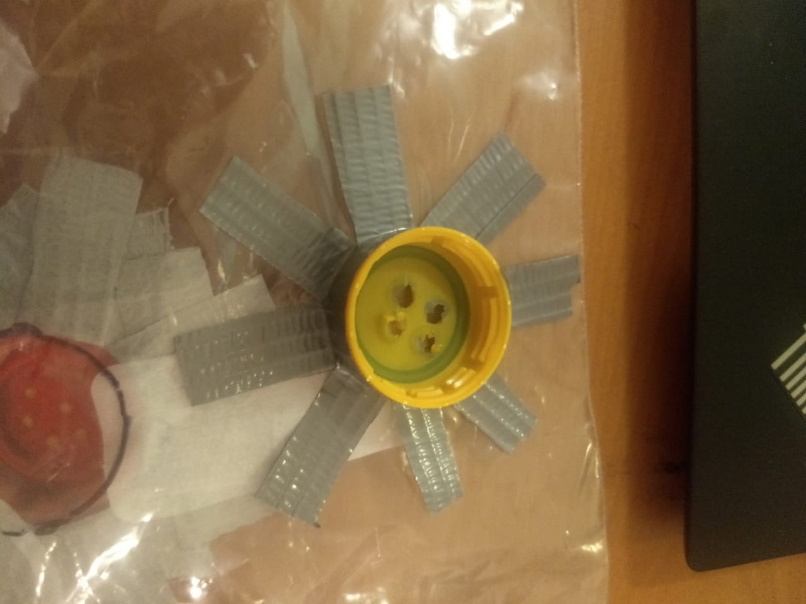
Cortar una serie de trozos delgados (0.5-1 cm) de cinta americana, y adherirlos a la bolsa junto a la orilla de la tapa, tangencialmente a esta, cubriendo el espacio dejado por los “pétalos” de cinta (ver figura). Nota: Este paso se realizó en RA-03, lográndose un sello razonable sin necesidad de silicona líquida. Con la posterior adición de silicona, es probable que este paso no sea necesario.
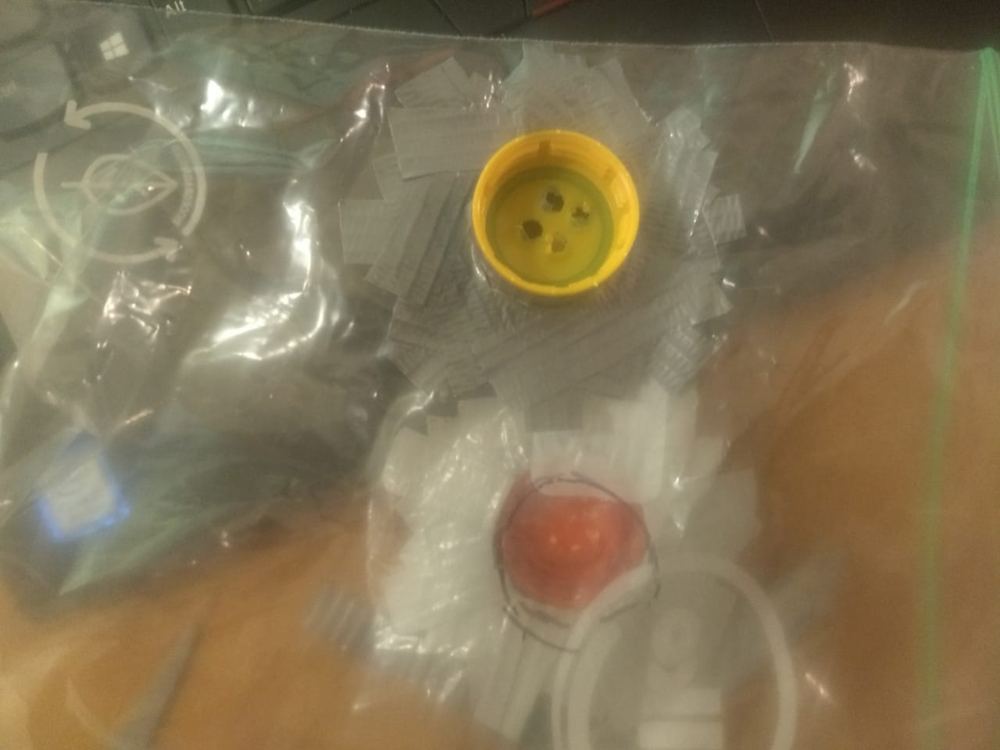
Cortar la bolsa por el lado interno, en el lugar ahora cubierto por la tapa
Es vital no cortar mas que lo que la tapa cubre, aunque se puede cortar algo menos.
Repetir los pasos del 3 al 8 con la válvula y la segunda marca en la bolsa. Con algunas diferencias importantes:
La válvula consiste en dos tapas, el cilindro se pega a la tapa que a que va pegada la membrana.
El cilindro no debe llegar al borde externo de la tapa (para evitar que la cinta de teflón se pegue a él). Debería haber un margen de 1-2 mm entre el borde y donde parte el cilindro.
Al final, la tapa que contiene la membrana se adhiere a la bolsa con la cara interna (la apertura de la tapa) mirando hacia la bolsa, al revés del conector para el filtro.
Sellar los contornos de ambas tapas en el punto en que se tocan con la bolsa, usando silicona líquida
Pegar dos trozos de cinta americana por el lado interno de la bolsa, cubriendo los lugares en que están fijadas las tapas, y luego perforar, o retirar un trozo de cinta exactamente bajo cada tapa.
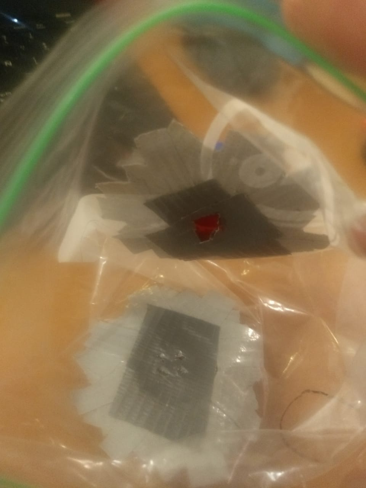
Doblar la bolsa hacia un lado por el lado cerrado, a unos 15 cm de la apertura. Manteniendo el doblez, revestir la parte externa de la bolsa con cinta americana (obviamente, sin cubrir la válvula ni la conexión para el filtro. Por el lado de la apertura de la bolsa, dejar desde la parte re-sellable hacia afuera sin cubrir (en el modelo RA-03. Puede ser preferible dejar un margen adicional de ~1 cm).
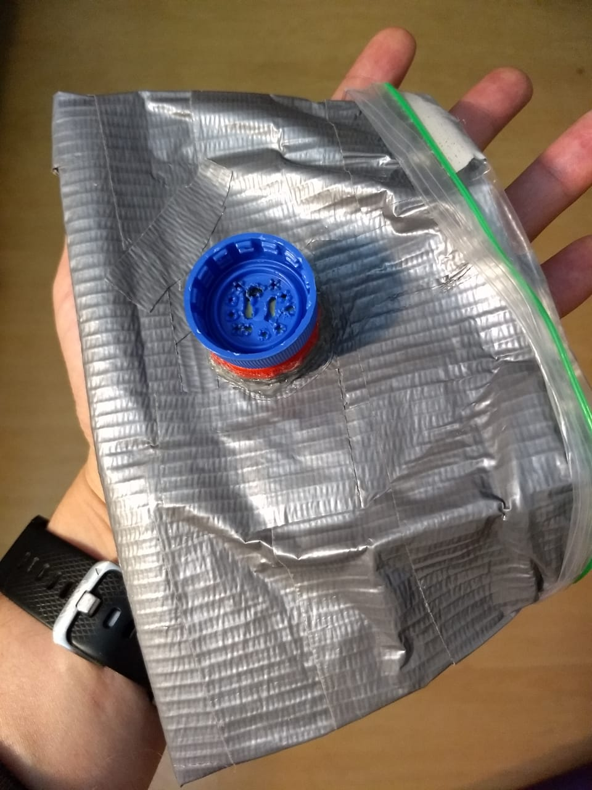
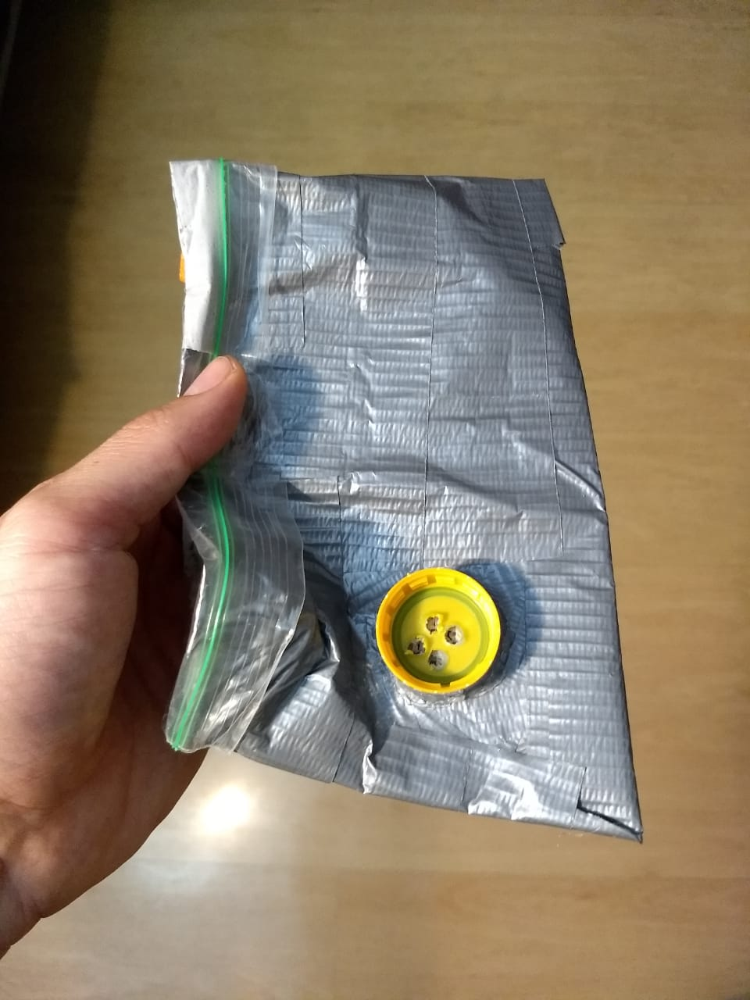
Esto concluye la confeccion basica del respirador mismo. Si uno cubre la apertura para el filtro (por ejemplo, conectándolo a una botella plástica sin orificios) debería ser posible fijarla al rostro con las manos y lograr un sello “negativo” (que impida la entrada de aire).
Para facilitar la visión, y por comodidad, la esquina de la bolsa más cercana al filtro debiera ir hacia abajo, cerca del mentón, puesto que el filtro que se conectara ahi tendra un cierto volumen. La esquina donde va válvula debe ir hacia arriba, cerca de la nariz.
Terminaciones
Para facilitar el sello del respirador alrededor del rostro, se realizaron las siguientes adiciones:
Pieza al tabique nasal
Las mascarillas N95 desechables suelen contar con una pieza de metal flexible en la parte de la nariz. Para confeccionar esta pieza:
Extender y doblar en dos un clip, formando una “U”. Cubrir la U con cinta americana, agregando una o dos capas extra al extremo abierto de la “U”, para evitar que los extremos del alambre dañen al respirador y/o al usuario.
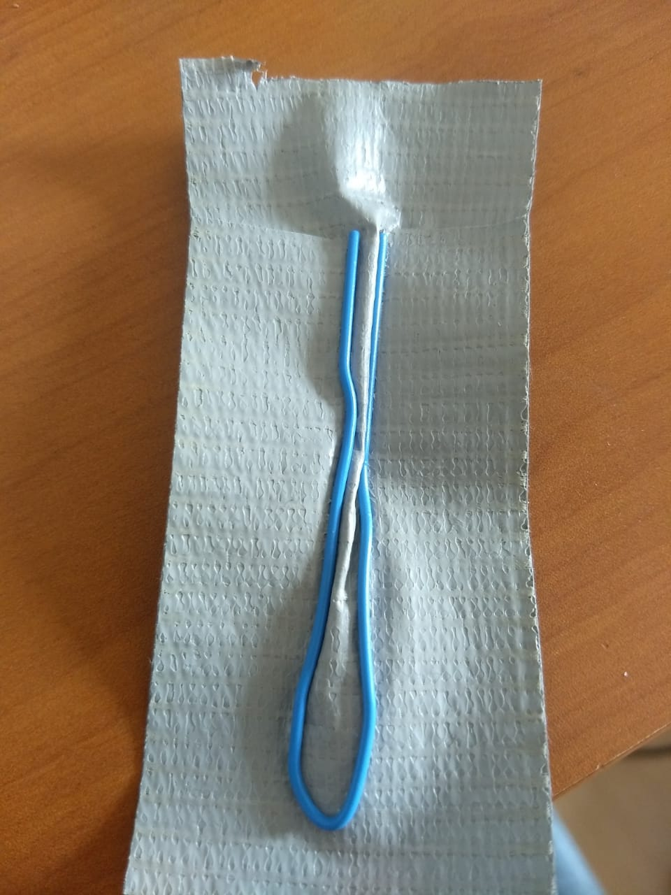
Pegar, con otro trozo de cinta americana, la pieza confeccionada en el punto anterior al lado exterior de la máscara. Debería adherirse por el lugar donde se espera que se ajuste la nariz.
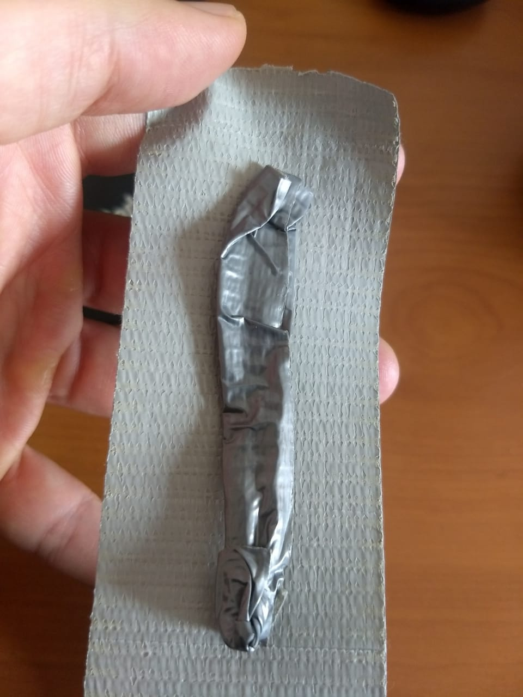
Pieza al mentón
Debido a la alta flexibilidad de la bolsa, es deseable agregar también un soporte a la parte que se fijará al mentón (el extremo opuesto de donde se fija a la nariz). Para esto:
Extender dos clips y pegarlos paralelos, a 0.5-1 cm de distancia a un trozo de cinta americana algo más largo que los alambres extendidos.
Doblar la cinta americana en torno a los alambres, cubriendolos, cuidando cubrir cuidadosamente los extremos (puede ser necesario usar cinta adicional).
Pegar la estructura resultante a la máscara, por fuera, en la zona que se fijará al mentón.
Goma al tabique nasal
Con el fin de facilitar el sello en el área de la nariz:
Recortar un trozo de goma eva de aproximadamente 1x10 cm
Fijar el trozo a la máscara con silicona liquida, por la parte interna, en la posición equivalente al alambre de la nariz, asegurándose de que quede bien sellada.
Elasticos
Aunque el prototipo AR-03 no cuenta con elasticos para su postura, es posible agregar estos utilizando una corchetera/engrapadora. Puede ser necesario reforzar con cinta americana las
partes del respirador a perforar.
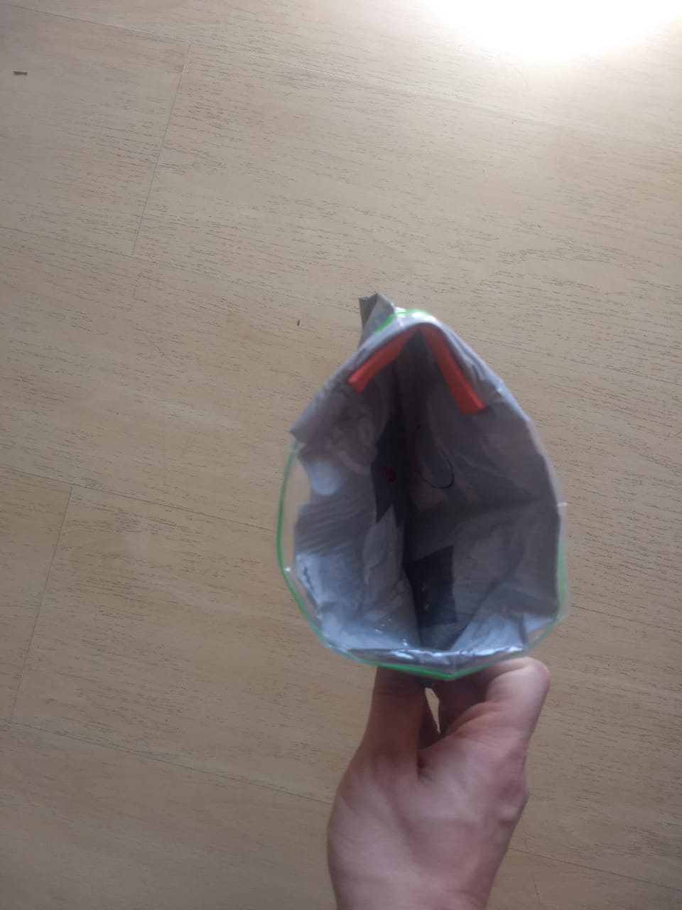
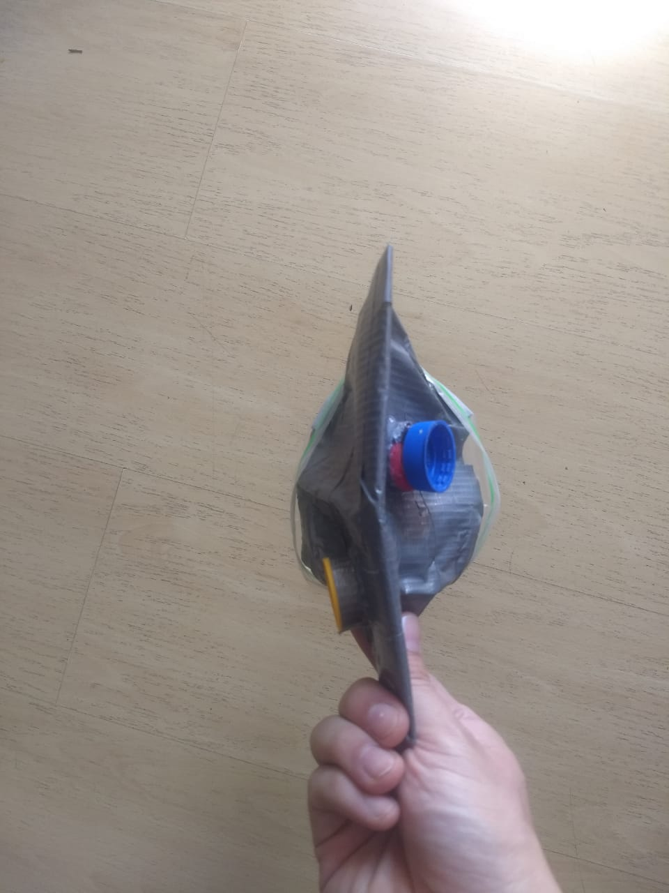
Precauciones y mejoras propuestas
Se enumeran algunas precauciones a seguir durante la confección del respirador, y algunas mejoras propuestas para el siguiente prototipo (AR-04), para ser tenidas en cuenta durante la confección .
Para permitir un correcto flujo de aire, es preciso maximizar cantidad de orificios en la tapa de botella que constituye la articulación al filtro. Incluso, se sugiere realizar un solo orificio de diámetro tal que no alcance a dañar el borde de la goma al interior de la tapa (que puede ser importante para la hermeticidad de la conexión) .
Aunque pruebas preeliminares indican que sí, no es posible asegurar que, una vez fijada con elásticos, AR-03 podra ser acomodada en el rostro de forma tal que no se filtre aire por los costados. Puede ser necesario agregar goma eva por todo el contorno de la máscara.
Podría, ser tambien conveniente y/o más cómodo sustituir la goma eva utilizada actualmente por goma eva de mayor espesor, y otro material.
En su estado actual, AR-03 es deformable, lo que causa que se adhiere al rostro durante la inspiración. Se propone resolver este problema agregando un “esqueleto” de alambre, fijado a la parte exterior del respirador, utilizando los mismos clips que se utilizaron para la pieza nasal y de mentón. Este diseno se probara en AR-04.
En una veta similar a la anterior, los alambres utilizados en la pieza nasal y de mentón presentan una rigidez excesiva (particularmente el nasal), lo que da lugar a incomodidades durante la postura del respirador. Se propone experimentar un alambre más delgado para estas piezas.
Pese a la válvula de escape, es posible que AR-03 tienda a humedecerse por dentro al ser usado por periodos prolongados. Existen varias soluciones posibles, desde agregar una válvula adicional, hasta fijar un material higroscópico no tóxico (como silica-gel) a la cara interna de la máscara, en un lugar que no esté en contacto directo con la piel del usuario.
Esta pagina se actualizara cuando AR-04 sea confeccionado y probado.